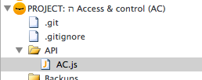

API
API’s allows projects to publish functionality to SSJS and on up the food chain to CSJS. API functionality is not required to be scoped around data class objects like how default Wakanda approach uses. Instead, API is generally organized around business objects. Business objects can be any combination of class objects and workflows small or large.
The use of API to “publish” functionality means that the client should never directly access data storage directly. This does not mean that there is no functionality written at the class object level—just no business or UI logic is at the class object level. Class object functionality is reserved for keeping persistent data structures and data requirements square.
Incoming Changes
versioning
api class setup (with security code injection to make calls as similar as possible between external and internal)
- developer key for external validation
External
post
url: http://base\_url.com/projectNameSpace/api/1/node/node/node(etc)/action
header: Content-type: application/json
- body: json objects with developer token and arguments
Using same endpoint as cross-project xhr talk but with a developer token (and host) whitelist. (Localhost and whitelist requests go through.)
Setup
- create a folder in the top level of the project called
API - create a javascript file in the
APIfolder with the name of the project’s identifier

Boilerplate
Any number of javascript design patterns can be used to structure the API.js file(s). Based on the fact that there can be be public and private methods accessed from both the project itself and outside the project, we have gravitated towards one api top level file that uses:
- object literal for the public methods
- section for private functions, variables and CONSTANTS
module.exportssetup code to use in the same project via CommonJS patterncontrollerfunction to handle xhr requests from other projects
Work in progress boilerplate:
/**
* Public API variable
*/
var AC = {};
/**
* internal: use as a module
*/
var module = module || new Object();
if (module && module.exports) {
module.exports = AC;
}
/**
* external: request handler comes in here
*/
function controller (request, response) {
debugger;
var
method,
results;
// TODO: go to access and control module to authenticate client request
// if AC authenticated
var authenticated = true;
if (authenticated) {
currentSession().promoteWith('Code');
// TODO: based on request params, call a method generically (no CASE!)
// if multilevel deep, call correctly
// var results = AC[method](request);
results = AC.organization.getAll(); // example
}
else {
// TODO: if not authenticated
// TODO: use error module with error object
return "some error"
}
return results;
};
/**
* API: public methods
*/
AC.organization = {};
AC.organization.getAll = function get() {
return ds.Organization.all();
};
/**
* Private functions, variables and CONSTANTS
*/
function anonymous(xx) {
}
Request handler
The key for exposing API to other projects is have a request handler
route all external xhr requests through to the controller method in
the API. Add the following to each project’s bootstrap.js file (switch
out the name spacing):
addHttpRequestHandler(
'/api/\.\*',
'API/AC.js',
'controller'
);